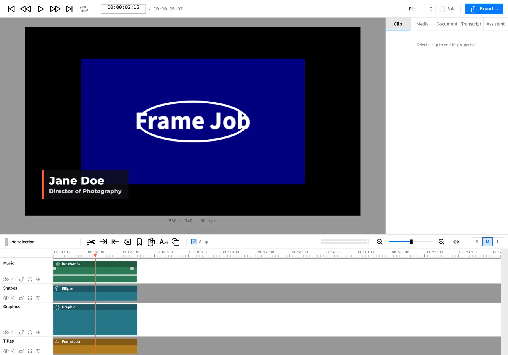
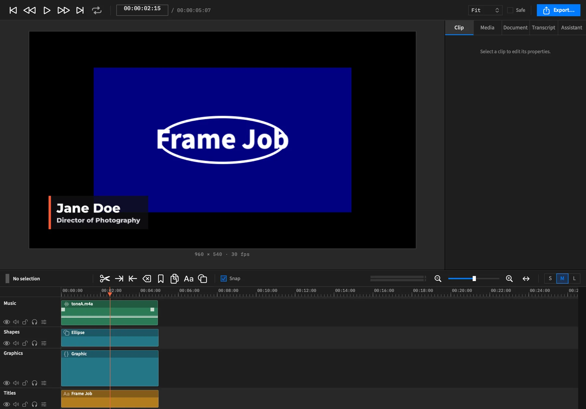

Editing
Split clips
Cut clips in two at the playhead, and see what each piece keeps of the footage, actions, word timings and graphics.
Split cuts a clip in two at the playhead, so you can trim, move or remove one piece without touching the other. There's no separate blade or razor tool. Split does that job.
- Menu
- Clip ▸ Split
- Keys
- ⌘T
- Where
- The scissors button in the timeline bar
- Tools
split


Split at the playhead
- Move the playhead to the frame you want to cut on.
- Select the clips to cut, or select nothing to cut everything under the playhead.
- Press ⌘T, choose Clip ▸ Split, or click the scissors button in the timeline bar.
| What's selected | What gets cut |
|---|---|
| One or more clips | Each selected clip the playhead is inside |
| Nothing | Every clip under the playhead on every unlocked track |
It's one undo step, named Split, however many clips it cuts. If nothing can be cut, Frame Job beeps and nothing changes.
Asides
The four Starlight asides, as the system's callout: a full tint, an icon and the word. No left bar.
Note
The cut lands on the project's frame grid.
Tip
Select nothing to cut every clip under the playhead at once.
Caution
Sound fades are copied to both pieces, so set them again where you don't want them.
Danger
Reserved for what loses work. The docs have none today.
With an agent
split cuts at a time you give it, or at the playhead if you leave the time out. See Tools: cutting and deleting.
# Connect Claude Code to Frame Job
claude mcp add framejob -- "/Applications/Frame Job.app/Contents/Helpers/framejob-mcp"